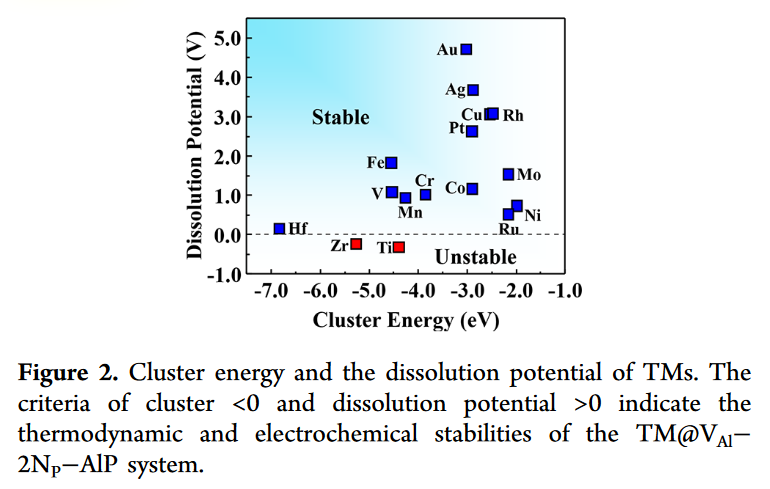
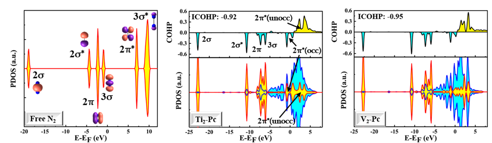
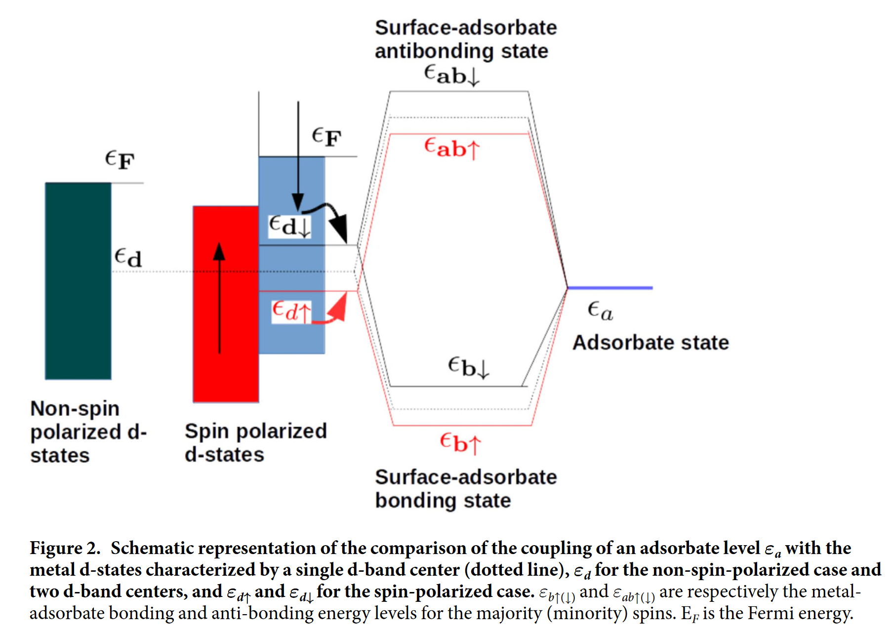
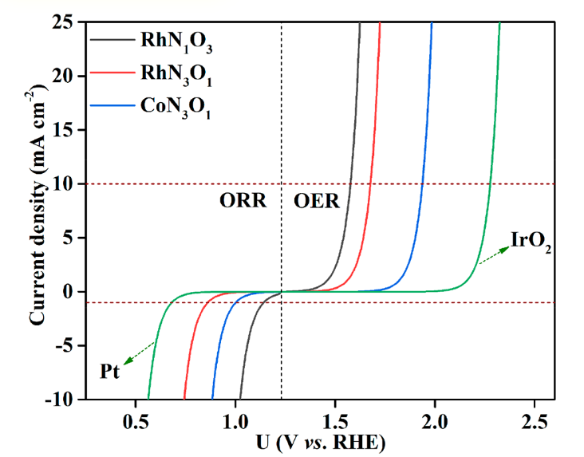
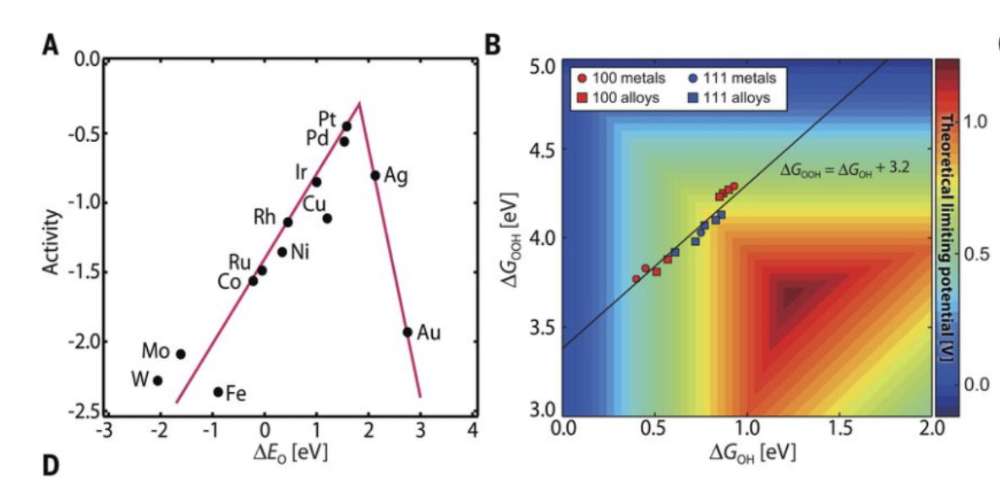
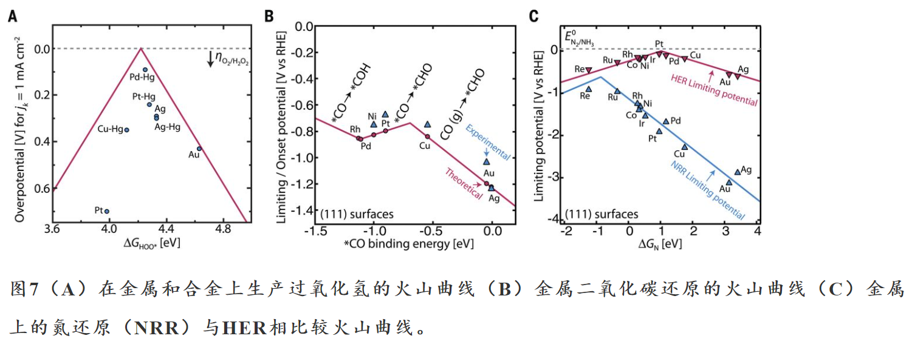
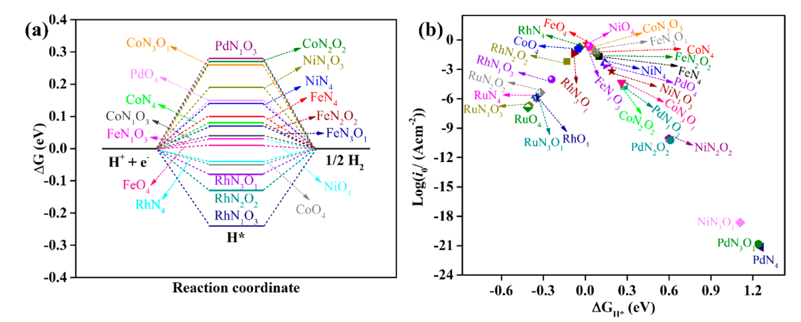
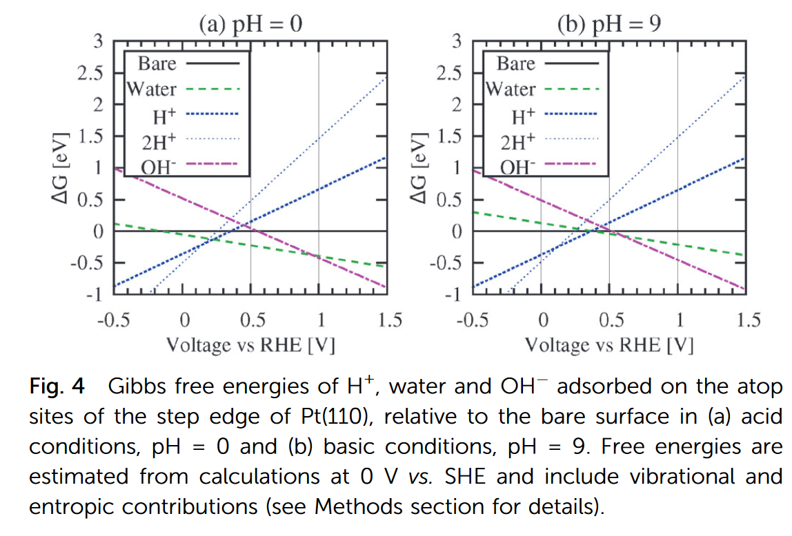
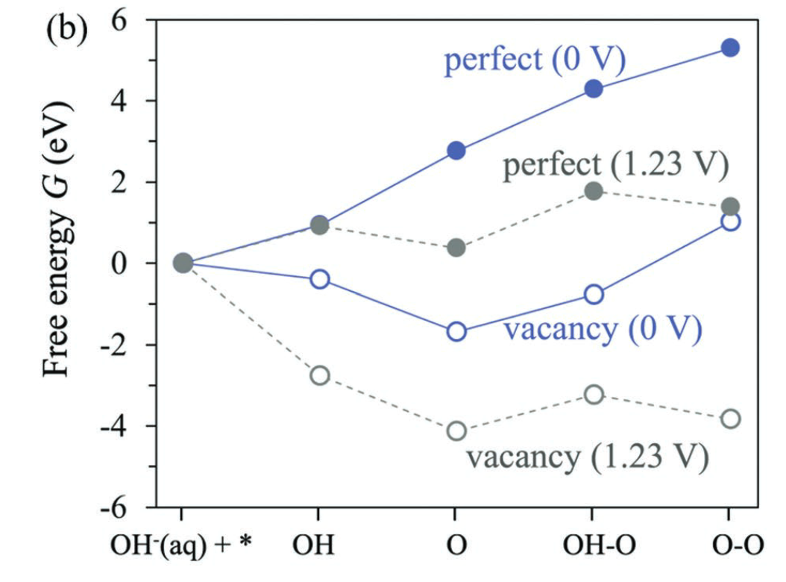
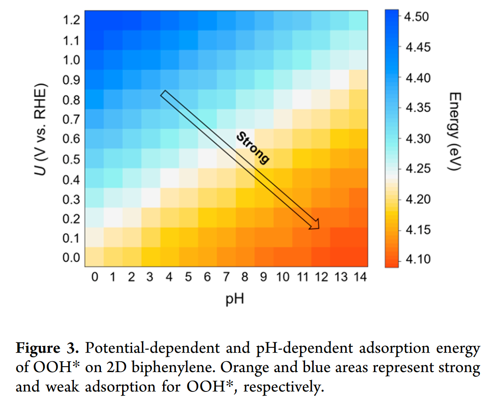

All the calculations were carried out using Vienna ab initio simulation package (VASP 6.2)[2,3] with projector augmented wave (PAW) pseudopotential method[4,5] and Perdew-Burke-Ernzerhof (PBE) functional[6]. The atomic positions were optimized using conjugate gradient method, and the convergence criteria for energy and force were 1\times10^{-4} eV and 0.01 eV-1, respectively. The kinetic energy cutoff for plane waves was set to 500 eV. A large vacuum spacing (more than 15 ) was taken to prevent mirror interactions. The Brillouin zones were sampled with 2\pi\times0.02-1 spacing in reciprocal space by the Monkhorst-Pack scheme[7]. Grimme’s DFT-D3 van der Waals (vdW) corrections with the Becke-Jonson (BJ) damping[8,9] was employed.
The formation energy of the dopants (E_f) was calculated as follows[10], E_f=E_{dop}-E_{undop}-\sum n_i\mu_i, where E_{dop} and E_{undop} are the energies of the system after and before doping, respectively. n_i indicates the number of atoms of type i (host atoms or impurity atoms) that have been added to (n_i>0) or removed from (n_i<0) the supercell when the defect or impurity is created, and the \mu_i are the corresponding chemical potentials of these species. The chemical potentials for O and N atoms were derived from freestanding molecules, and corresponding value for C was from graphene.
The free energy changes (\Delta G) at each electrochemical step involve a proton-electron transfer, which are computed based on computational hydrogen electrode (CHE) model[11,12], in which the zero voltage (vs. RHE) is defined in the equilibrium of H^++e^-\leftrightarrow\frac{1}{2}H_2(g) at all pH. The Gibbs free energy change (\Delta G) for each CO2 reduction reaction (CO2RR) process were given by \Delta G=\Delta E_{elec} +\Delta ZPE+\int\limits_{0K}^TC_PdT-T\Delta S+\Delta G_U+\Delta G_{pH}, where \Delta E_{elec} is the reaction energy of reactant and product molecules adsorbed on catalyst surface. The zero-point energy (ZPE), enthalpic temperature correction (\int\limits_{0K}^TC_pdT), and entropy (S) for the adsorbates were calculated as follows, ZPE=\frac{1}{2}\sum\limits_i\hbar\omega_i,\int\limits_{0K}^TC_PdT=\int\limits_{0K}^TC_VdT=\sum\limits_i\frac{\hbar\omega_i}{exp(\hbar\omega/k_BT)-1},S(T)=k_B\sum\limits_i(\frac{\hbar\omega_i/k_BT}{\exp(\hbar\omega_i/k_BT)-1}-ln(1-exp(-\hbar\omega_i/k_BT))), where harmonic approximation was employed for the enthalpic temperature correction, and T=298.15 K was used for the above calculations. The free energies for the freestanding gas molecules were calculated using VASPKIT code[13] with pressures and temperatures from a previous study by Nørskov et al[12]. The bias effect on the free energy of each initial, intermediate and final state involving an electron in the electrode is taken into account by shifting the energy of the state by \Delta G_U=-neU , where U is the electrode applied potential relative to RHE as mentioned above, e is the elementary charge transferred and n is the number of proton–electron pairs transferred. \Delta G_{pH} is the correction of the H^+ free energy and depends on whether the reaction under consideration is a reduction or an oxidation,
\Delta G_{pH}=-k_BTln[H^+]=pH\times k_BTln10,
where k_B is the Boltzmann constant and T is the temperature. Furthermore, a correction of -0.51 eV was made for the freestanding gas-phase CO molecule due to the use of PBE functional, and stabilizations of 0.25 and 0.1 eV were applied to COOH* and CO* due to solvation effect[12].
Hence, the equilibrium potential U_0 for four-electron transfer ORR at pH = 14 was determined to be 0.402 V versus NHE or 1.23 V versus RHE according to the Nernst equation (E=E0−1\times pH, U_{RHE}^0=U_{NHE}^0+0.828=1.23), where the reactant and product are at the same energy level.
We used the optimized geometries from VASP and performed constant-potential calculations for single point free energy by using the open-source package JDFTx.[14] The implicit CANDLE[15] solvation model and GBRV[16] ultrasoft pseudopotentials (USPPs) were used. The ionic screening of net charges resulting from the constant \mu_e condition was achieved with cation (1.0 M Na+) and anion (1.0 M F) components in the fluid model.[17] We used a 3\times3\times1 k-point grid and 20 hartree (544 eV) energy cutoff in the JDFTx calculations. The level of the standard hydrogen electrode (SHE) was set to 4.66 V in the CANDLE model.[15] All other settings are similar to those in the VASP calculations.
[18]The explicit constant electrochemical potential (μe ) calculations with the implicit CANDLE solvation model[15] were performed upon all IS, TS, and FS geometries, using JDFTx[14]. The Garrity–Bennett–Rabe–Vanderbilt (GBRV)[16] ultrasoft pseudopotentials (USPP) were used, with a plane-wave cutoff of 544 eV (20 a.u.). All other settings are similar to those in VASP calculations. The ionic screening of net charges resulting from the constant μe condition was achieved with cation (0.1 M K+) and anion (0.1 M F?) components in the fluid model[17] under the JDFT framework[19]. The algorithm used by JDFTx variationally minimizes the grand free energy at fixed electron chemical potential with respect to Kohn–Sham orbitals[20], fluid bound charge, and an auxiliary Hamiltonian for the occupations[21].
[18]The TS search was conducted by using the climbing-image nudged elastic band (CI-NEB) method (39) to generate initial guess geometries, followed by the dimer method (40) to converge to the saddle points. Note that very low-frequency modes were obtained in some cases, because the explicit water molecules are not properly constrained by the hydrogen-bonding network present in water bulk. Such low-frequency modes can cause unphysically large entropy contributions, so they were reset to a threshold value of 60 cm-1, corresponding to the acoustic translational mode of the six-member rings in water bulk (41, 42). For the CO hydrogenation step where the surface H model was used to locate the TS, the IS was referenced back to the H+(H3O+/H2O) + e-1 pair through the free energy difference between the surface H and H2(g), based on the half-cell reactions,
Thus, the pH effect is introduced into the free energy profile with the reference. In addition to vibrational contributions, the translational and rotational contributions to the free energy of H2(g) were included, assuming the ideal gas model.
3.1.2.1 Free Energies in JDFTx (Number of electrons changed every step)[22]
Using the OH^?(aq) + h\rightarrow ^*OH as an example, here we show how to calculate the free energy change (ΔG) of the reaction. In this example, \Delta G=G(^*OH^{Q_2})-G(*^{Q_1})-G(OH^-)(aq)+(Q_2-Q_1+1)\mu_e \ (6),where Q_1 and Q_2 are the net charges (obtained from JDFTx) on the solid before and after the adsorption. \mu_e is the electron energy and can be calculated as \mu_e=\mu_{SHE}-|e|U_{SHE}, where U_{SHE} is the applied voltage versus SHE, and \mu_{SHE}=-4.66 eV (\mu_{SHE} in the JDFTx is different from the experimentally measured value). G(OH^-) is calculated by G(OH^-)=G(H_2O)-G(H^+)=G(H_2O)-[1/2G(H_20(g))-\mu_{SHE}-\times pH]\ (8),G(^*OH^{Q_2}) and G(*^{Q_1}) are calculated by summing the adsorbate vibration contribution to the free energy with the electronic energy (obtained from JDFTx), and the G(H_2) is calculated by summing the vibration, translation, and rotation contributions (calculated using Gaussian software) at standard conditions with the electronic energy. Similarly, we can obtain ΔG for other reactions. The formation free energy of an adsorbate is obtained by summing up ΔG for all the reactions along the pathway toward the formation of the adsorbate.
[23]We perform ab initio calculations at fixed electron chemical potential[17] using the framework of Joint Density Functional Theory (JDFT)[19] as implemented in JDFTx.[14] In contrast to conventional fixed-charge calculations, this allows for ready comparison with voltammetric data. The calculations utilize a continuum solvent model (LinearPCM continuum solvation model27 unless otherwise indicated) with ionic screening (1 mol/L of cations and anions unless otherwise indicated). This allows us to treat charged slabs with meaningful total free energies and absolute electron chemical potentials (relative to the vacuum level) that quickly converge with simulation cell size, as detailed elsewhere.[17] We relate the absolute electron potential to electrode potential using the absolute potential of the standard hydrogen electrode (SHE) as 4.68 V below the vacuum level for the LinearPCM solvation model,27 and 4.55 V for the nonlocal SaLSA solvation model,30 following previous work.31
[24]Although the CHE model is capable of conveniently evaluating the activity of a given electrocatalyst, it considers the effect of many working conditions (e.g., electrode potential and pH value) only in the way of energy correction, which could result in considerable uncertainty for theoretical predictions. For example, Kim et al. theoretically showed that the system charge significantly affects the activity of 2D electrocatalysts with atomic thickness.34 To this end, we also utilized the constant-potential method developed by Duan et al.35?37 to explore the effects of U and pH values on the ORR activity of 2D biphenylene a33 and b22
[26]The calculations in the works by Pique et al[27] and Calle-Vallejo et al[25] contained external, somewhat arbitrary, ad hoc solvation corrections for *OH and *OOH and neglected the solvation of *O, which was shown in later works to be important[28,29] and similar in magnitude to those of *OH and *OOH. Thus, here, we removed the solvation correction of G_{solv} =-0.3 eV for and from the shown data.
[28]Fig. 6a contains free energies in solution including only a constant-shift solvation (CSS) correction of -0.30 eV for OH and OOH on all centers.[25] On the other hand, Fig. 5b contains the metal- and ligand-dependent solvation (MLS) corrections in Fig. 3b and 5 added to the free energies of O, OH and *OOH.
[29]For implicit solvent calculations we use the continuum solvation model implemented in VASPsol [34, 35] with a 600 eV plane wave cutoff. Explicit water layer structures are determined by the minima hopping algorithm implemented in ASE [36, 37]. Dipole correction is used to decouple electrostatic potentials on the two sides of the two-dimensional structure.
[29]
3.1.3.5.2 2e ORR
For the two-electron ORR, there are two reaction steps25*+O_2+H^++e^-\rightarrow OOH^* \ (5)OOH^*+H^++e^-\rightarrow H_2O_2+*\ (6) For the hydrogenation of oxygen (Eq. (5)), the \Delta G was calculated by Eqs. (7)–(9): \Delta G_1=\mu_{OOH^*}-\mu_*-\mu_{O_2}-1/2\mu_{H_2}\ (7) while for the reduction of OOH* to from H2O2 (Eq. (6)), the \Delta G can be obtained directly by Eq. (10): \Delta G_2=-1.4eV-\Delta G_1\ (10) herein, the G(OOH^*) is defined by Eq. (11): G(OOH^*)=4.92eV+\Delta G_1\ (11)
3.1.3.5.3 4e ORR
The ORR, OER and HER pathways on SAC systems were calculated in detail according to electrochemical framework developed by N?rskov and his co-workers[11]. As for ORR, in an alkaline electrolyte (pH = 14), H2O rather than H3O+ may act as the proton donor, so overall reaction scheme of the ORR can be written as: O_2+2H_2O+4e^-\leftrightarrow 4OH^- (8)
The ORR may proceed through the following elementary steps, which are usually employed to investigate the electrocatalysis of the ORR on various materials (in alkaline electrolyte): O_2(g) + H_2O(l)+e^-+^*\rightarrow OOH^*+OH^-\ (9)OOH^*+e^-\rightarrow O^*+OH^-\ (10)O^*+H_2O(l)+e^-\rightarrow OH^*+OH^-\ (11)OH^*+e^-\rightarrow OH^-+*\ (12) where ^* stands for an active site on the catalytic surface, (l) and (g) refer to liquid and gas phases, respectively.
The OER occurring in an alkaline electrolyte (pH = 14) through elementary steps takes the reverse direction of ORR: OH^-+* \rightarrow OH ^*+e^-\ (13)OH^*+OH^-\rightarrow O^*+H_2O(l)+e^-\ (14)O^*+OH^-\rightarrow OOH^*+e^-\ (15)OOH^*+OH^-\rightarrow O_2(g) + H_2O(l)+e^-+^*\ (16)
OER in acid electrolyte (pH =0)
Because it is difficult to obtain the exact free energy of OOH, O, OH and H radicals in the electrolyte solution, the adsorption free energy \Delta \mu_{OOH^*}, \Delta \mu_{O^*}, \Delta \mu_{OH^*} and\Delta \mu_{H^*}, are relative to the free energy of stoichiometrically appropriate amounts of H2O (g) and H2(g), defined as follows: \color{red} {\Delta}G_{O^*}={\Delta}G(H_2O(l)+*\rightarrow O^*+H_2(g)\color{red} =\mu_{O^*}+\mu_{H_2}-\mu_*-\mu_{H_2O}\ (19)\color{red} {\Delta}G_{OH^*}={\Delta}G(H_2O(l)+*\rightarrow OH^*+1/2H_2(g))\color{red} =\mu_{OH^*}+1/2\mu_{H_2}-\mu_*-\mu_{H_2O}\ (20)\color{red} {\Delta}G_{OOH^*}={\Delta}G(2H_2O(g)+*\rightarrow OOH^*+3/2H_2(g))\color{red} =\mu_{OOH^*}+3/2\mu_{H_2}-\mu_*-2\mu_{H_2O}\ (21)\color{red} \Delta_{H^*}=\Delta G(H^++e^-+*\rightarrow H^*)\color{red} =\mu_{H^*}-1/2\mu_{H_2}-\mu_*
3.1.4 基本分子能量
Table 1: Zero point energy corrections and entropic contri- butions to the free energies[30].
Group
TS(eV)
T{\Delta}S
E_{ZPE}
{\Delta}E_{ZPE}
H2O(0.035bar)
0.67
0
0.56
0
*OH+1/2H2
0.20
-0.47
0.44
-0.12
*O+H2
0.41
-0.27
0.34
-0.22
1/2O2+H2
0.73
0.05
0.32
-0.24
H2
0.41
0.27
1/2O2
0.32
0.05
O*
0
0.07
OH*
0
0.30
0.3
H*
0
0.17
0.17
[24]
Table 2. Assumed fugacity for each non-adsorbate species, along with calculated electronic energy, zero-point energy correction, enthalpic temperature correction, entropy contribution, and chemical potential, respectively. Electronic energies and chemical potentials do not include the gas-phase correction. H2 is the value used for gaseous hydrogen, H2 (ref) is used for the computational hydrogen electrode as described in Section 1[12]. My calculated values at 18.5\degreeC using VASP/VASPKIT[13] (PBE-D3/PAW) are shown in later parentheses.
Species
Fugacity (Pa)
E_{elec} (eV)
ZPE (eV)
\int C_p dT (eV)
-TS (eV)
ZPE-TS (my)
\mu (eV)
CO2
101325
0.90
0.31 (0.3067)
0.10 (0.0716)
-0.65 (-0.6456)
-0.3389
0.66
CO
5562
1.75
0.14 (0.1318)
0.09 (0.0628)
-0.67 (-0.6680)
-0.5362
1.31
H2
30296
-0.00
0.27 (0.2676)
0.09 (0.0628)
-0.42 (-0.4220))
-0.1544
-0.06
HCOOH
2
0.92
0.90 (0.8869)
0.11 (0.0874)
-1.02 (-1.0217)
-0.1348
0.91
CH3OH
6079
0.06
1.35
0.11
-0.79
0.73
H2O
3534
0.03
0.58 (0.5678)
0.10 (0.0755)
-0.65 (-0.6530)
-0.0852
0.05
CH4
20467
-1.22
1.20 (1.1859)
0.10 (0.0765)
-0.60 (-0.6009)
0.5850
-0.53
CH2O
101325
1.19
0.70
0.10
-0.66
1.34
C2H4
13942
-0.01
1.36
0.11
-0.71
0.74
H2 (ref)
101325
-0.00
0.27 (0.2676)
0.09 (0.0628)
-0.39 (-0.3916)
-0.1240
-0.03
Table： Base energy (PBE/PAW+500eV+VDW-D3/BJ)
Molecule
Eelec
ZPE-TΔS (VASPKIT)
μ
T
P
CO2
-22.979
-0.3389
-23.3179
298.15
101325
H2
-6.7689
-0.1544
-6.9233
298.15
101325
H2O
-14.2367
-0.0852
-14.3219
298.15
3534
CO
-14.7873
-0.5362
-15.8335
298.15
5562
HCOOH
-29.9231
-0.1348
-30.0579
298.15
2
CH4
-24.0716
0.673105
-23.398495
298.15
20467
N_2
-16.6229
-0.352536
-16.975436
298.15
101325
O_2
-9.8589
-0.419079
-10.277979
298.15
101325
H*
0.23
3.1.5 Interface
3.2 Discussion
3.2.1 Formation
[32]
Herein, we consider many kinds of vacant AlP, such as Al vacancy (VAl) and P vacancy (VP), where xP atoms are substituted by xN atoms in the VAl system, labeled as(VAl-xNP-AlP: most stable vacant AlP system): E_{form1}=E_V-E_P+\mu_{Al/P} , V/P defective and perfect AlP monolayer, \mu_{Al/P} from Al(Fm\overline{3}M) and P (P\overline{1}),
(VAl-xNP-AlP: TM atoms to bind with the substrate): E_{form2}=E_{defective}-E_P+x\mu_{N}+\mu_N+x\mu_P , V/P defective and perfect AlP monolayer, \mu_{Al/P} from Al(Fm\overline{3}M) and P (P\overline{1}),
(Binding energy to verify the stability of the TM@VAl-2N-AlP system) : E_{bind}=E_{TM/AlP}-E_{V/AlP}-E_{TM-single}
(Cluster Energy for aggregation possibility): E_{cluster}=E_{bind}-E{coh}, where cohesive energy of TM atoms E_{coh}=E_{TM-bulk/n}-E_{TM-single},
Dissolution potential for dissolution possibility of TM@VAl-xNP-AlP: U_{diss}=U_{diss-bulk}-E_{cluster}/n_e, where Udiss-bulk are the standard electrode potential, which are looked up from the handbook of chemistry and physics[33]wiki.[34]n_e is the number of transferred electrons during the dissolution reaction. Theoretically, the negative value of cluster energy and the positive value of dissolution potential indicate the thermodynamic and electrochemical stabilities.
3.2.2 Bond & Charge (ELF/SSAdNDP/DDEC6/Bader)
We all know that the flling of electrons into the anti-bonding orbital reduces the stability of the bond.
阳离子更适合ORR
Especially, the Fermi level mainly originates from Co-3d and O-2p because of the charge transferring from Co to O atoms, which coincides with the Bader charge analysis.
Moreover, the Bader charge analysis was employed to evaluate electronic redistribution before and after adsorption of intermediates.
Bader charge analysis also showed that about ∼0.29e− charge has been transferred from central Fe atom to O atom.
All TM@Mo2B2 SACs show excellent metallic conductivity, which would be favorable for the charge transfer in electrocatalytic reactions.
The charge transfer of BS−TM SACs was evaluated using the atoms in molecules method (Bader charge analysis)
In Fig. 6 and 7, Bader charge analysis [47], [48], [49] and charge density difference during ORR, are shown. In terms of charge transfer, the α- and β-MnO2 surfaces reveal that the electron from the catalyst surfaces transferred to the intermediate species. Thus, the positive and negative values of Bader charge analysis arise from both charge accumulation and depletion, accordingly. The electron accumulation and depletion represented by the yellow and blue regions demonstrate that the Mn active site and its neighbor atoms lost their electrons to the intermediate species.
The Bader charge analysis revealed that B atoms increased the charge density of Ni atoms, leading to moderate binding of O2.
The Bader charge of adsorbed O 2 is denoted.
Adding iridium to the bimetallic alloys barely changes the net charge on the Pt-skin surfaces, so the surface charge is mainly modified by the 3d metals. Because Cr has a smaller electronegativity (1.66, Pauling scale) than Co (1.88, Pauling scale), the valence electrons are easier to be transferred to the surface of the Cr-containing alloy, producing a more electronegative Pt-skin surface. This is also verified by the net charge of the second layer 3d metal atoms: The values are determined as to for the Pt–Co alloys, but to for the Pt–Cr alloys. The Bader charge distribution can be used to qualitatively interpret the surface stability and adsorption strength: The charge transfer from the 3d metals to Pt results in an extra charge–charge interaction between the surface and the sublayers and thus boosts the surface stability. It also leaves more negative charge on the surface Pt atoms, which weakens the adsorption strength of electronegative adsorbates such as O and OH. This effect consequently lowers their binding strength on the Pt-skin surface. As the valence charges on the bimetallic and trimetallic alloy surface atoms are close, the weaker binding of OH on the Pt-skin surfaces of ternary alloys should mainly originate from the compressive strain.
The Bader charge analysis list in Table 1 indicates that a large amount of valence electrons are donated from the early−TM atom supported on borophene to surrounding boron atoms, resulting in partially ionic bonding between early−TM and B atoms. On the contrary, the Bader charges of VIII−TM atoms supported on borophene are much smaller than the above counterparts. Therefore, more d electrons of VIII−TM atom should fill the d orbital. The electron localization functions (ELFs) were calculated to study the chemical bonding and its effects on the electrocatalytic activity of BS−TM. As shown in Fig. 5 and S13, the near-free electrons are localized in the middle of B−B bonds of pristine borophenes. Thus, borophene can be easily functionalized and act as the support for adsorbate. The near-free electrons on the top of early−TM atoms can be easily transferred to H2O and further form the intermediate reactant, OH, which results in the negative ΔG1. On the contrary, there are nearly no metallic electrons on the top of VIII−TM* atoms. Generally, the VIII−TM atom is covalently bonded with the nearest-neighbored B atoms with the pd state hybridization (Fig. S11, S12).
In addition, the analysis of the partial density of states (PDOS) (Fig. S28†) revealed that the d-band center of N4Fe–CuN3 (-1.46 eV) was much closer to the Fermi level than those of Cu–N4 (-2.53 eV) and Fe–N4 (-2.29 eV). The resulting lower occupation of the antibonding orbital with absorbed *COOH further supports the occurrence of stronger binding interactions and more stabilized adsorption on Cu–N4 and Fe–N4. After forming *COOH intermediates, all the calculated models can effortlessly undergo the second proton-coupled electron transfer process (*COOH /*CO), as verified by the observed downhill pathways.
[36]To get a deep understanding on the strain-induced spin-state transition, we studied the energy difference (\Delta E) between eg and t2g according to PDOS versus strain. The Co_3d state is split into t2g (dxy,dxz, and dyz) and eg (dx2-y2, and dz2) states (Fig. S8?), and the energy difference between eg and t2g is calculated by using \Delta E=E_{t_{2g}}-E_{E_g}, where Et2g and Eeg are the values of lower eg and upper t2g states,respectively. (可不可以用cener？)
Therefore, C1 atoms can provide empty p orbitals to activate the O2 and to promote the subsequent electrochemical steps.
In principle, the hybridization between the reaction intermediates and active atoms could bring about the splitting of their hybridized energy levels to the bonding and antibonding states. As a result, a higher p-band center (εp) of the active atom would lead to a lower level of filling of antibonding states and stronger binding to adsorbates, and vice versa.
The Crystal Orbital Hamilton Population (COHP) values for Co–O pairs show positive values for the bonding states, and negative values for the antibonding interaction. In general, a large integral value means a strong interaction. (反了)
[37]However, as a ferroelectric semiconductor with a sizable band gap (1.46 eV)38, α-In2Se3 monolayer does not have enough electrons to be injected into the antibonding 2\pi_u orbitals of CO2 so that the strong sp-hybridization symmetry of the carbon atom can not be disrupted41. Thus, the material itself is not suitable as a catalyst for CO2 reduction42, which is corroborated by our theoretical study: upon adsorption on In2Se3, the inherent linear O=C=O structure of CO2 molecule is well maintained (see Supplementary Fig. 4 and Supplementary Table 3).
In addition, the analysis of the partial density of states (PDOS) (Fig. S28†) revealed that the d-band center of N4Fe–CuN3 (-1.46 eV) was much closer to the Fermi level than those of Cu–N4 (-2.53 eV) and Fe–N4 (-2.29 eV). The resulting lower occupation of the antibonding orbital with absorbed *COOH further supports the occurrence of stronger binding interactions and more stabilized adsorption on Cu–N4 and Fe–N4. After forming *COOH intermediates, all the calculated models can effortlessly undergo the second proton-coupled electron transfer process (*COOH /*CO), as verified by the observed downhill pathways.
The resulting lower occupation of the antibonding orbital with absorbed *COOH further supports the occurrence of stronger binding interactions and more stabilized adsorption on Cu–N4 and Fe–N4. After forming *COOH intermediates, all the calculated models can effortlessly undergo the second proton-coupled electron transfer process (*COOH /*CO), as verified by the observed downhill pathways

Fig. Molecular orbitals of free N2, and the computed partial density of states (PDOS) and the crystal orbital Hamilton populations (COHPs) of N2 on eight M2-Pc (M = Ti, V, Ta, Cr, Mn, Mo, W, and Re) surfaces. The bonding and antibonding states in COHP are depicted by cyan and yellow, respectively.
This model was then verified with experimental and theoretical studies by various research groups.
The d-band center and the product of the number of d-orbital electrons and electronegativity of the TM atom are the ideal descriptors for this system.
[39]The reason is that the interaction strength is related to the filling of the anti-bonding states formed between the metal d states and the adsorbate valence states. The higher the d states are in energy relative to the highest occupied states at the Fermi energy, the higher in energy the antibonding states are, the more empty they are, and the stronger the interaction becomes.
[40]The gap between d-band center (εd) of Ni (3d) orbitals and Fermi energy level (EF) is narrowed and the electronic interaction of the intermediate and the active sites is strengthened.
[41]A stronger upward shift indicates the possibility of the formation of a larger number of empty anti-bonding states, leading to a stronger binding energy. The upward shift of the d-band center can therefore be treated as a descriptor of the catalysis.
[41][42]
3.2.4.2 p-band Center
[24]In principle, the hybridization between the reaction intermediates and active atoms could bring about the splitting of their hybridized energy levels to the bonding and antibonding states. As a result, a higher p-band center (εp) of the active atom would lead to a lower level of filling of antibonding states and stronger binding to adsorbates, and vice versa.
[36]Comparing the Co_d band center and O_p band center between LS and HS CoOOH with different intermediates, we find that the O_p band center is closer to the Fermi level, and the more negative Co_d band center for HS CoOOH results in a weaker Co–O bond and adsorption free energies (Table S2?).
3.2.5 Gap
[24]According to the density of states (DOS) calculations, the electronic states at the Fermi level of 2D biphenylene are primarily contributed by the 2p orbitals of C1 atoms, which could be further confirmed by partial charge density analysis (Figure S1). Overall, these abundant electronic states could accelerate electron transfer and improve the binding to adsorbates, which is desirable for electrocatalysis.
Smaller band gap facilitates the greater filling of the bonding orbitals with a lower overpotential, favorable for the ORR [31]
[43]The smaller band gaps also endow the system with higher chemistry reactivity and lower kinetics stability.
[44]A smaller energy gap between the M 3d and O 2p band centers of the transition metal oxide catalyst can lead to a stronger covalent bond and reduced charge transfer barrier between the metal and oxygen, which is likely to result in higher OER or ORR catalytic performance.
3.2.6 Polarization Curves Simulation of OER and ORR[45–47]

For a given electrochemical process O + ne \leftrightarrows R under one electric potential U, it can be used the well-known Nerst equation to link the concentrations of the reactant and the product16 by the following equation (9):
U=U_0+\frac{RT}{nF}ln(\frac{C_0}{C_R})
Here, U_0 refers to the equilibrium potential of the reaction at the standard state, R refers to the universal gas constant, T refers to the temperature, n refers to the electron transfer number, F refers to the Faraday constant, and C_O/C_R refers to the concentration of the reactant/product in this reaction.[46] Therefore, the exchange current density j_0 can be calculated by the following equation (10):
Where k refers to the reaction rate constant, U_{eq} refers to the equilibrium potential, and \alpha refers to the transfer coefficient. So, the electrochemical polarization equation can be defined by equation (11):
Where \eta=U-U_{eq} refers to the overpotential deviated from the equilibrium potential and j of the overall current density. The exchange current density j_0 can be used to evaluate the catalytic activity of one catalyst. Following the electrochemical catalysis mode developed by Nørskov,[11] the reaction rate constant k can be defined as follows: (12)
𝑘=𝑘_0\exp[-\frac{\Delta G_{max} }{k_bT}],
Where k_b and \Delta G_{max} refers to the Boltzmann constant and the Gibbs free energy change of the potential-determining step, respectively. In the electrochemical polarization model,[48]k_0 is defined as the equation (13):
k_0=\frac{k_bT}{h} Where h refers to the Planck constant. Therefore, the exchange current density j_0 of the electrochemical reaction when the reaction approaches its equilibrium state can be described as the following equation (14):
The OER and ORR need to overcome the reaction kinetic energy barriers, and the onset potential generally represents the reaction potential at which the current begins to deviate from the baseline.[49] In this work, the calculated polarization curves for the OER and ORR was calculated as literature reported.[47]
[24]
[24]The polarization curves of 2D biphenylene at different pH values can be obtained by solving the rate equations (see the Supporting Information for the computational details). As a validation, the half-wave potentials (Half-wave potential (E1/2) is a potential at which polarographic wave current is equal to one half of diffusion current (id). ) of Pt(111) were determined to be 0.90 V at pH 1 and 0.87 V at pH 13, consistent with previous experimental studies.40?43 2D biphenylene exhibits a rather small half-wave potential of 0.53 V at pH 1, which is much lower than that of Pt. Therefore, although 2D biphenylene has a considerably high limiting potential, it would show rather poor ORR performance in acidic environments, which was often ignored by previous theoretical studies. Remarkably, at pH 13, the half-wave potential of 2D biphenylene reaches 0.9 V and is substantially higher than that of Pt (0.87 V). Therefore, 2D biphenylene is expected to deliver an ORR performance that is better than that of the well-established Pt under alkaline conditions.
3.2.7 Microkinetic
3.2.8 Volcano Plot[50]
[50]
[50][51] OER Volcan
3.2.8.1 HER Volcano

[45]The exchange current i_0 can reflect the intrinsic state of electrons during the HER process.[30] Therefore, the theoretical exchange current i_0 was calculated to describe the HER kinetics under the equilibrium potential U = 0 and pH = 0 conditions by the equation i_0=-ek_0\frac{1}{1+\exp(|\Delta G_{H^*}|/k_BT)} . Here, k_0 is the reaction rate constant at zero overpotential, k_B is the Boltzmann constant, and T is the temperature. For illustrative purpose, k_0 was set to 1. Hence, a volcano curve is obtained and plotted using i_0 as a function of the calculated ΔGH* to compare the HER activities on the stable electrocatalysts (Figure 3b). The HER activity can be quantitatively evaluated from the position of ΔGH* and i_0 with respect to the volcano peak. The closer the position of ΔGH* to the volcano peak, the better HER activity of one catalyst.[30]
[30]Exchange Current for HER:
i_0=-ek_0\frac{1}{1+\exp(-\Delta G_{H^*}/k_BT)} is for \Delta G_{H^*}<0, while i_0=-ek_0\frac{1}{1+\exp(-\Delta G_{H^*}/k_BT)}\exp(-\Delta G_{H^*}/k_BT)=-ek_0\frac{1}{1+\exp(\Delta G_{H^*}/k_BT)} for \Delta G_{H^*}>0.
So: i_0=-ek_0\frac{1}{1+\exp(|\Delta G_{H^*}|/k_BT)} (where e=-1,k_0=1,k_B=8.6173324\times10^{-5} eV/K )
[32]To further explore the correlation between the free-energy changes of each intermediate (ΔG1, ΔG2, ΔG3, and ΔG4), together with the obtained relationship of ΔG~*OOH~ and \Delta G_{*OH} ( \Delta G_{*OOH}=0.92\Delta G_{*OH}+3.32 ), the four free-energy changes can be modified as
myscript: orrmap a b [0.01], \Delta G_{*OOH}=a*\Delta G_{*OH}+b
Hence, the OER and ORR activities can be characterized by ΔG~*O~ − ΔGOH ~and ΔG~OH. That is to say, the adsorption energy of all species can be calculated after knowing ΔGO~ and ΔG~OH. The contour maps of OER and ORR activities are plotted in Figure 6c,d, divided into four parts, corresponding to the intermediates’ four free-energy change steps after applying the equilibrium potential. (Over potential \eta_{OER}=\max\{\Delta G_1,\Delta G_2,\Delta G_3,\Delta G_4\})
Recently, it has been shown that the free-energy difference between OH* and OOH* is constant within ±0.2 eV and appears to be universal, independent of the binding strength to the surface.22 This observation was made by Koper,23 where he noted that the binding strengths of OH* and OOH* are related to each other by a constant amount of ∼3.2 eV for metal (111) facets and oxide surfaces regardless of the binding site. We have recently shown using detailed density functional theory calculations that this scaling relation also holds for metal (100) facets.5 **As a result, we can combine the thermodynamic analysis for the 2e− and 4e− reduction and describe the activity, to a first approximation, as a function of a single descriptor, ΔGOH*.**
[56]Given the existence of a constant scaling factor of 3.2 ± 0.2 eV between the binding free energy of HOO* and HO*, the binding free energy of HO* (GHO) can also be used as a descriptor for the 2e− ORR.[8,16] For the Fe-N-C and Mn-N-C catalysts, the strong binding free energy for the HO* intermediate favors the 4e− pathway over the 2e− pathway. Cu-N-C and Ni-N-C bind the ORR intermediates very weakly, resulting in poor peroxide selectivity and low catalyst activities, due to difficulties in forming the HOO* intermediate. The binding energy of the HO* intermediate over Co-N-C catalyst is located near the top of the volcano plot, thus accounting for favorable 2e− ORR performance.
The strong binding of *OOH with small ΔG~OOH~ value (the adsorption energy of *OOH species) is unfavorable for the peroxide formation, owing to the dissociation of *OOH (splitting of O−O bond) to form the final product H2O. It indicates the selectivity towards the 4e− pathway dominates over the 2e− pathway in this case. In contrast, the weak binding of *OOH with large ΔGOOH value facilitates the desorption of *OOH to produce H2O2.
The free energy results plotted in Fig. 4b show that the CO2 activation process (CO2 /*COOH) is endothermic for the different catalyst models and is thus identified as a potential limiting step.
[42]Nevertheless, compared with other structures, the N4Fe–CuN3 diatomic active site significantly reduces the energy barrier (0.22 eV) for the formation of *COOH intermediates, resulting in a reduced onset potential and enhanced catalytic activity.This behavior is consistent with the larger charge transfer from Fe to *COOH, as evidenced by the differential charge analysis, and is consistent with the shorter Fe–C bond length (1.932 ̊ A vs. 1.945 ̊ A for FeN4) and longer C–O bond length (1.394 ̊ A vs. 1.367 ̊ A for FeN4), where the C–O bond breaks to form *CO (Fig. S27†).
[57]The left leg of the 2e− volcano indicates strong binding of *OOH on the catalyst surface, wherein the limiting potentials of the 4e− route are always more positive, suggesting the presence of a greater driving force for H2O production than H2O2 production. In contrast, for the right leg of the 2e− volcano, with weak binding of *OOH on the catalyst surface, the limiting potentials for both pathways are identical, indicating simultaneous production of H2O and H2O2. The most active catalyst for 2e− ORR would locate at the peak of the 2e− volcano, which is unoccupied, owing to the either too high or too low Δ*G~*OOH~ value. Subsequent studies demonstrate that Pd-Hg possessed the optimal Δ*G*OOH~value as it locate closest to the peak of 2e− volcano.33-35 DFT calculations on catalyst could offer in-depth insights into the thermodynamics and kinetics of the ORR. Moreover, combining the computational and experimental studies could help to build the relationship between theoretical ΔG~OOH value and experimental overpotentials required to reach the kinetic current density of 1 mA cm−2 to H2O2, thus facilitating to determine the volcano diagram to accurately determine the most promising catalysts.36, 37
3.2.8.3 Scaling Ralations
[58]The more robust scaling relation is \Delta G_{OOH^*}=\Delta G_{OH^*}+3.3\pm0.2 eV. The ±0.2 eV still denotes the uncertainty induced by modeling scattered data with a straight line and not the calculational uncertainty for a given surface. Using the functionally independent scaling relation, more robust predictions of minimum overpotentials and optimal adsorption free energies can be performed for a given surface. In general, the minimum thermodynamic overpotential of ∼0.4 eV will increase by 0.05 eV. Predictions of optimal catalyst reactivities are also modified. For ORR catalysts, the optimal adsorption free energy of OH* (∼0.8 eV) predicted from the improved scaling relation requires a slightly more reactive catalyst, which adsorbs OH* 0.05 eV stronger, than previously predicted. For OER, the predicted optimum adsorption free energy difference between O* and OH* (∼1.7 eV) has increased by 0.05 eV. This requires a slightly less reactive catalyst than previously predicted.
[59]From detailed DFT calculations on (1 1 1) surfaces, they found that for the energies:
\Delta E(OH_{ads})\approx 0.50\times E(O_{ads})+0.05 eV, \Delta E(OOH_{ads})\approx 0.53\times E(O_{ads})+3.18 eV
or, after the approximate corrections [32] for the free binding energies and the stabilization by the interaction with water [32]:
\Delta E(OOH_{ads})\approx 0.53\times E(O_{ads})+3.33 eV
suggesting the following general relationships:
\Delta E(OH_{ads})=0.5\times E(O_{ads})+K_{OH},
\Delta E(OOH_{ads})= 0.5\times E(O_{ads})+K_{OOH}
in which the binding energy of atomic oxygen, DG(Oads), serves as a so-called descriptor, such that the equilibrium potentials of reactions (18)–(20) may all be written as a function of this single descriptor (again assuming that the binding energy itself does not depend on potential) [17]. The bad news about these “scaling relationships” is that they exclude the possibility of finding the optimal catalyst as defined by Eqs. (25)–(27). The scaling relationships basically fix the difference \Delta E(OH_{ads})-E(O_{ads}) at K_{OOH}-K_{OH} = 3.29 eV, whereas the optimal catalyst requires this difference to be 2 \times C_{O} = 2.46 eV. This is the fundamental reason why the ORR has a non-zero overpotential, even for the best catalyst.
The reaction free energy of equations (9)–(12) (\Delta G_1, \Delta G_2, \Delta G_3, \Delta G_4) for ORR can be calculated using the following equations:
For ORR, the onset potential is calculated by U_{ORR}^{onset}=-\max\{\Delta G_1,\Delta G_2,\Delta G_3,\Delta G_4\}=\min\{-\Delta G_1,-\Delta G_2,-\Delta G_3,-\Delta G_4\} , Nørskov et al. developed a method to determine the overpotentials[60], \eta^{ORR}=1.23-U_{ORR}^{onset}/e\ eV
For OER, the onset potential is calculated by U_{OER}^{onset}=\max\{-\Delta G_1,-\Delta G_2,-\Delta G_3,-\Delta G_4\} , Nørskov et al. developed a method to determine the overpotentials[60], \eta^{OER}=U_{OER}^{onset}/e-1.23\ eV
An ideal catalyst should be able to facilitate water oxidation just above the equilibrium potential, but requires all the four charge transfer steps to have reaction free energies of the same magnitude at zero potential (i.e., 4.92 eV/4 = 1.23 eV).
In theory, an ideal catalyst should have a G_{OOH^*} of 4.22 (\pm0.1) eV.
3.2.9 Fix-potential and pH

[23]Our result for water adsorption resolves the long-standing debate regarding the species adsorbed at the step edge, and it suggests that partially oxidized water likely plays a role in many of the reactions happening on the step edge, such as the hydrogen evolution reaction.14,15,50 Others have suggested that hydrogen binding energy12,14 changes with pH; this result illustrates that water oxidation rather than hydrogen binding energy explains the unexpected pH dependence.Therefore hydrogen adsorption on platinum step-edges is not a one-electron process.
pH related to H^+ in solution regardless of substrate, so G_{H^++e^-}=1/2G_{H_2}-RTln10\times pH=1/2G_{H_2}-2*pHG_{OH^-}=G_{H_2O(l)}-G_{H+}=G_{H_2O(l)}-(1/2G_{H_2}-RTln10\times pH)
[36]
[36]As we know, the electrode surface in the electrochemical system is in electrical contact with an external circuit, which will result in a charged surface and greatly affect the OER activity.[61] In this section, we extend our study on the effect of applied potential. The average slopes, which are related to capacitance, are about 7.6 and 8.6 \muF/cm2 on the positively charged side for LS and HS CoOOH, respectively.
[36]Obviously, the free energy will be very sensitive to the surface net charge. We find that the potential energy barrier decreases linearly with the increase of U for the O/OOH step in the hydroxide ion attack mechanism (Fig. 5(a)), while it is relatively constant over the potential for the OO / OO step in the intramolecular coupling mechanism (Fig. 5(b)), because there is one electron involved in the O / OOH step but no explicit electron transfer in the OO/OO step.
Free energy evolution of WSe2 reacting with OH? in water at pH = 13.[22]
E=E_0+RT/(nF)ln[H+]\approx E_0-\times pH/n
Figure 3 shows that ΔGOOH* decreases with the increase of pH, indicating that the adsorption of OOH* species on 2D biphenylene can be greatly enhanced in a strongly alkaline environment.[24]
3.2.10 XANES
3.2.11 Descriptor \varphi[45]
The descriptor φ involving the TM site and its nearest neighboring N/O atoms was calculated as following: (3) \varphi=\theta_d\times \frac{\chi_{aver}}{\chi_O} . Here, \theta_d refers to the valance electron number of the TM atom, \chi_{aver} refers to the average electronegativity of the TM atom and its nearest neighboring N/O atoms, and \chi_O refers to the electronegativity of the O atom.\chi_{aver}is defined as (\chi_{TM}+n\chi_{N/O})/(n+1), where \chi_{TM} and \chi_{N/O} refers to the electronegativiti es of the TM and N/O atoms, respectively, and n is the number of N/O atoms (in this work, n is 4).
[23]These stepped surfaces serve as model surfaces for the more common polycrystalline surfaces and nanoparticles which include similar step edges.[23]Therefore hydrogen adsorption on platinum step-edges is not a one-electron process. If n electrons are transferred in Hupd, the electrode potential varies with pH as E=E_0+RT/(nF)ln[H+] by the Nernst equation, where F is the Faraday constant, T is temperature, and R is the gas constant. At room temperature, RT/(nF)ln[H+]\approx-59 mV per pH, so that n>1 results in a reaction potential relative to an absolute reference electrode that changes by less than 59 mV per pH. Relative to the RHE that shifts 59 mV per pH, this shift will be 59-59/n mV per pH. The partially oxidized water shifts the step-edge Hupd peak, and because the PZTC falls in the Hupd region, this consequentially shifts the PZTC. This explains why the PZTC of Pt is experimentally found to have nearly no shift with pH for the 111 surface (-1 mV per pH unit17), and a shift of 12 mV per pH unit for the 110 surface.18 The charge on the water changes somewhat depending on the metal surface, but the phenomenon of partial oxidation is observed for all of these metal step edge sites.
[78]During the structure relaxations, all atoms in the molecule and the Au apexes were allowed to relax, while the surface Au atoms were frozen to their bulk Au(111) crystal structure positions (the plane of Au atoms nearest to the left of the simulation box). Relaxations were carried out for various electrode–electrode separations to identify the lowest energy geometry. The structure relaxations were carried out using the Vienna ab initio simulation package (VASP)[2,3] with the projector augmented-wave potentials47 and using the Perdew–Burke–Ernzerhof generalized gradient approximation (PBE-GGA)[6]. (ATK+OpenMX)
Optimization of all geometric structures is carried out within the framework of the density functional theory using the Vienna ab initio simulation package (VASP)[2,3] with the projector augmented wave (PAW )[5] method. … After optimization, the subsequent spin-dependent transport properties of these systems were determined by using the NanoAcademic Device Calculator (Nanodcal)[79] software package, which adopts the density functional theory (DFT) combined with the Keldysh nonequilibrium Green’s function formalism (NEGF). In the transport calculations, the local spin density approximation (LSDA)38–40 describes the exchange-correlation potential, and the valence electronic orbitals are expanded in a double-\zeta plus polarization (DZP) basis set for all atoms. The cutoff energy for the real space grid is set to 190 Ry and 1 × 100 × 1 k-points mesh is employed in the Brillouin zone for electrodes. The spin-dependent current through the scattering region is obtained by the Landauer-Büttiker formula[80]:
here, h and e are Planck’s constant and the charge of one electron, respectively. \sigma is \uparrow (spin up) and \downarrow (spin down), T_{\sigma}(E,V) are spin-resolved transmission functions defined as:
where \Gamma_{L/R,\sigma} is the coupling matrix; G_{\sigma}^{R/A} are the retarded and advanced Green’s functions of the scattering region, respectively. The transmission coefficient represents the probability that electrons at an energy E pass through the scattering region. f_{L/R}=\frac{1}{1+e^{(E-\mu_{L/R})/k_BT}} are Fermi-Dirac distribution function of the left/right electrodes. \mu_{L/R} are electrochemical potentials of the left/right electrodes, and the difference between them is eV=\mu_L(V)-\mu_R(V) at a given bias V. For all practical purposes, the equilibrium Fermi level ( E_f ) is zero in the two-probe system. The electrochemical potential of the right electrode has no shift for all bias, \mu_R(V)=0 . Just the Fermi energy of the left electrode shifts according to the bias. Therefore, the Fermi energy of the right electrode and scattering region is always zero. Thus, [-eV, 0] is the energy bias window (EBW), which means the energy region contributing to the current integral.
The valence electrons were expanded in double-z plus polarization (DZP) basis set for B and Sr atoms, and single-z plus polarization (SZP) basis set for Au atoms. The Hamiltonian and electronic densities are evaluated in a real space grid defined with a plane-wave cut-off energy of 150 Ry[81] (NanoDcal/PBE).
The single-\zeta with a single polarization basis set was employed for Au atom and the double-\zeta basis functions with a single polarization for othe atoms, which is comparable to well-converged plane wave basis set[79,82]. The energy cutoff was set to 150 Ry, which is enough for Au electrode system[83].
[84]We have first optimized the isolated Na@C60C60[F?], Na@C60C60, and F@C60C60 molecules by using the DFT method. The ground state of Na@C60C60[F?], Na@C60C60, and F@C60C60 are found to be singlet, doublet, and doublet, respectively. These optimized molecules are then sandwiched between two electrodes to construct the molecular junctions, as schematically illustrated in Fig. 1. Such structures can be achieved by the lithographic mechanically controllable break junction (MCBJ) method.[85] The concrete process can be realized as follows: one can first fabricate the break junction on substrates by the electron beam lithography, then deposit the molecules of interest using self-assembly. Also, it is possible to suspend the molecules in a scanning tunneling microscope (STM) junction for the transport measurement.[86,87] The models M1, M2, and M3 correspond to Na@C60C60[F?], Na@C60C60, and F@C60C60 junctions, respectively. Each junction is divided into three regions, namely, the left electrode, the right electrode, and the scattering region. In our studied systems, the atomic scale Au (100) nanowires are modeled as the semi-infinite left and right electrodes and each atomic layer in the electrodes contains 5 or 4 Au atoms.27–31 The scattering region involves the central molecule and portions of two electrodes to take into account the moleculeelectrode coupling and the electrode screening effect, while the remainder of the electrodes is described by bulk parameters. The distance between the left and right electrodes for all of the studied models is fixed at 22.45 Å, which corresponds to the lowest energy for pure C60 dimer junction.13 Interactions from the adjacent neighbors are hindered by large supercell dimensions (20 Å) in the plane perpendicular to the transport direction. The whole system is relaxed again until the maximum absolute force on each atom is less than 0.05 eV/Å while the electrode Au atoms are kept fixed. It has been demonstrated that the influence of the bias voltage on the geometry is negligible when the bias voltage is smaller than 1.0 V.34,35 Therefore, we do not take into account the structural changes induced by the bias voltage.
(ATK)The Troullier-Martins nonlocal pseudo-potential[88] and a double-ζ plus single polarization basis set are adopted to describe the core and the valence electrons of all the atoms, respectively, except a single-ζ plus single polarization basis set is adopted for Au atoms to achieve a balance between accuracy and computation loading. The Brillouin zone of the electrode is sampled by a 1 × 1 × 100 k-point mesh within the Monkhorst-Pack scheme. The nonlinear current through the molecular device is calculated by integrating the transmission function T (E, V ) within the energy bias window [μL, μR] using the Landauer-Bütiker formula[80]
where e is the electron charge, h is the Planck’s constant, f_{L/R}=1/[1+e^{(E-\mu_{L/R})/k_BT}] is the Fermi-Dirac distribution function, \mu_{L/R}(V)=E_F\pm eV/2 is the electrochemical potentials of the left/right electrode, while the average Fermi level E_F of the system is set to zero in our calculations for facilitating the discussions. Therefore, the energy bias window is in fact [−eV/2, + eV/2]. The case where the left (right) electrode is the anode (cathode) is defined as the application of a positive bias. And we also must point out that the electronic transport mechanism in NEGF + DFT method is coherent ballistic, which is more applicable to the low-bias voltage regime (usually not beyond 1.0 V).
(NanodCAL)Standard norm-conserving nonlocal pseudopotentials[88] are used to define the atomic cores, a s, p, d double-ζ plus polarization (DZP) linear combination of atomic orbital basis set33 is used to expand physical quantities.
Around the contact distance, the tip induced structure relaxations15 could affect our results, which were neglected to reduce the computational load. The spin transport calculations were performed by the Nanodcal code,25 based on the nonequilibrium Green’s function method and density functional theory, within the local-density approximation. Valence electrons were described by a double-ζ plus polarization basis set for the H, C, and N atoms and a double-ζ basis set for Co and Mn atoms.
对给定的某个电极，光电流也有正有负，这个怎么理解？正负是代表方向还是具体电子结构决定的？光电流的方向定义是指 lead 指向 center regio如果电流从电极到中心区为正 ，那么电流从中心区到电极就为负.计算出的光电流只包含由光照引起的电流。同一个 Lead 有正负也是可能出现的。偏振角度不同，或者在不同电压下，光电流的流向不一样也是可能的。因为计算光电流过程中有一个特殊的效应 photogalvanic effect，会引起光电流方向的改变。如果 two probe 体系具有“非空间 反演对称性”，则光电流的方向将会随光的偏振角度发生改变。
Nanodcal 已实现声子谱、有效质量的计算,迁移率还在内测。
电极半无限长主要由计算表面格林函数的算法决定，另外器件中电极长度远大于中心区，可以近似考虑为无限长。器件的电极由超胞组成，周期性地延伸到无穷远处。我们将若干层电极原子结构延伸入中心散射区 C 内，这使得电极和中心区在边界处保持各种物理量的连续。在 Nanodcal 中，我们假设电极无限长这样就可以通过 DFT 方法求解出电极的哈密顿量。计算之后，将无限长的电极 截断成半无限长的电极，并将电极表面的电势V_s(x,y)保存起来，其中下标s表示电极和中心区在 z 方向的边界。为了使得输运体系电极加电压之后还是一个等势体，电极必须是金属或者金属性的材料。换句话说，当在电极上加上一个电压，此时整个电极的电势必须严格的平移相应的电压值。因此，在 Nanodcal 计算中，无论是否加偏压，电极的哈密顿量都可以用第一部分讲到的传统的 DFT 进行计算。
本征半导体做导线不算，是不是可以理解成Si的本征半导体最好不要做电极？或者黑磷材料也是半导体，应该不能用纯的黑磷做电极？是的。计算非平衡态性质时，本征 BP 不要用。那么说只要是半导体的话如果要成为电极，也可以掺杂？是的。
4.2 Discussion
4.2.1 IV曲线和整流效应
[84]Figure 2 describes the dependence of current I on bias voltage V (I-V curve) within bias range (−0.7, 0.7 V) for three models. From the figure, one can see that the transport properties are strongly dependent upon the species inside the fullerene and two distinct features in the evolution of current are clearly visible: First, M1 and M2 display metallic I-V characteristics, while the current is nearly zero for M3 in the whole bias range. Second, for all three models the I-V curves are not symmetrical with respect to the positive and negative bias. However, the degree of asymmetry for I-V curve is different in three models, among which M2 has the highest asymmetry. The bias-dependent rectification ratio, defined as R(V ) =|I−/I+|, is presented in the inset of Fig. 2, where I+ and I− are the currents under the positive and negative bias, respectively.
There is no rectification if R(V ) = 1, and it is forward (reversed) rectification if R(V ) < 1 (R(V ) > 1). As can be seen that M1 and M2 show forward rectification at the low bias region (V<0.3 V) and after that they are reversed up to the applied bias 0.7 V. On the contrary, until 0.2 V, M3 reveals reversed rectification, and then it is forward rectification. It is evident that M2 shows the best rectifying with the maximum rectification ratio of ∼48 at ±0.6 V, while the maximum rectification ratio is quite small in M1 (∼0.31 at ±0.3 V) and M3 (∼0.24 at ±0.6 V).
4.2.2 Transmission
As the current is obtained by integrating the transmission spectrum within the energy bias window, to explain the above I-V characteristics, we calculate the bias-dependent transmission spectra for M1 at 0, ±0.3 V, M2 and M3 at 0, ±0.6 V, respectively, as shown in Figs. 3(a)–3(c). In the figure, we indicate with dashed horizontal lines the electrochemical potentials of two electrodes at a finite bias.
When the bias is applied, the system is driven out of equilibrium and the electrode electrochemical potential changes and the transmission peaks will shift in energy. However, the shift is completely different for three models. For M1, when positive bias increases, all transmission peaks shift downwards; when negative bias increases, these transmission peaks above the EF shift upwards slightly, while others below the EF shift downwards obviously. Clearly, there is a comparable transmission integral within the energy bias window at ±0.3 V, resulting in a small rectification ratio. For M2, with an increase of positive bias, all transmission peaks are depressed dramatically, and these transmission peaks within energy range (0.2, 0.4 eV) at equilibrium state shift upwards and move out of the energy bias window at 0.6 V, while others shift downwards. In the meantime, all transmission peaks shift upwards as negative bias increases and two peaks around 0.2 and 0.4 eV are enhanced significantly at −0.6 V. As a result, the covering area within the energy bias window of −0.6 V is much larger than that of 0.6 V in the case of M2, leading to a large rectification ratio of ∼48. For M3, no matter what bias increases, all transmission peaks shift downwards and move out of the energy bias window. Since there is no any transmission peak within the energy bias window, the current through M3 is nearly zero and the rectification ratio is also very small in M3.
4.2.3 PDOS
We interpret the origin of these transmission peaks and their different shift with the applied bias in terms of energy alignment using a possible scheme based on analysis of the projected density of states (PDOS). In Figs. 4(a)–4(c),this is presented for left (purple line) and right (orange line) C60 moieties of M1 at 0, ±0.3 V, M2, and M3 at 0, ±0.6 V, respectively. The positions of corresponding molecular projected self-consistent Hamiltonian (MPSH)28,39 orbital eigenvalues are marked by blue circles, which match well with the PDOS peaks. For M1, from Fig. 4(a), one can see that the left C60 moiety contributes to the three PDOS peaks within 0–0.5 eV, while the three PDOS peaks within −0.15–0 eV are the contributions of right C60 moiety at equilibrium state.
Clearly, the transmission peaks around the EF originated from these PDOS peaks (see the left panel of Fig. 3(a)). Since there is no any overlap between these two sets of PDOS, the corresponding transmission peaks are very weak. When positive bias increases, all PDOS peaks shift to lower energies, while the PDOS peaks of left (right) C60 moiety shift to higher (lower) energies slightly (obviously) with the negative bias increasing. owever, there are always obvious PDOS peaks (corresponding to MPSH orbitals 244 and 245) of left C60 moiety within the energy bias window, resulting in a comparable transmission integral at ±0.3 V and a small rectification ratio. As shown in Fig. 4(b), for M2, there are considerable overlaps between the PDOS of left and right C60 moieties around 0.08 and 0.35 eV at equilibrium state (corresponding to MPSH orbitals 241 and 244), resulting in two obvious transmission peaks at corresponding energy (see the middle panel of Fig. 3(b)). With an increase of positive bias, the PDOS peaks of left (right) C60 moiety shift downwards (upwards) significantly. Thus, there is no longer any overlap between them within the energy bias window and the transmission peaks are then weakened remarkably. On the contrary, all PDOS peaks shift upwards with the negative bias increasing and they overlap more considerably around 0.2 and 0.4 eV (corresponding to MPSH orbitals 241 and 243), leading to two heightened transmission peaks at corresponding energy. As a result, a big rectification ratio appears. As shown in Fig. 4(c), for M3, no matter what bias increases all PDOS peaks shift to lower energies and move outside the energy bias window, resulting in no any transmission within the energy bias window and a weak rectification.
4.2.4 MPSH (NanoDCAL?)
The changes in strength of transmission peaks with an increase of bias in M2 can be seen more intuitively from the spatial distribution of the corresponding MPSH orbital.29,40 As shown in Fig. 5, we present the spatial distributions of five MPSH orbitals (240–244) around the EF at 0 and ±0.6 V, respectively. At equilibrium state, orbitals 240, 242, and 243 are strictly localized on one of the C60 moieties, while 241 (244) is mainly localized on the left (right) C60 moiety with a few extensions on the right (left) C60 moiety, resulting in two obvious transmission peaks around 0.08 and 0.35 eV. When 0.6 V bias is applied, all five orbitals strictly confine to one of the C60 moieties, causing the transmission peaks to be strongly suppressed. In the case of −0.6 V, orbitals 241 and 243 are almost delocalized on the whole fullerene dimer, leading to two heightened transmission peaks around 0.2 and 0.4 eV.
High Thermoelectric Performance for Semiconducting Bilayer Borophene
[1]
Asthagiri, A.; Janik, M. J. Computational Catalysis. Computational catalysis; The Royal Society of Chemistry, 2014.
[2]
Kresse, G.; Furthmuller, J. Efficient Iterative Schemes for Ab Initio Total-Energy Calculations Using a Plane-Wave Basis Set. Phys. Rev. B1996, 54, 11169–11186.
[3]
Kresse, G.; Hafner, J. Norm-Conserving and Ultrasoft Pseudopotentials for First-Row and Transition Elements. J. Phys.: Condens. Matter1994, 6, 8245–8257.
[4]
Blochl, P. E. Projector Augmented-Wave Method. Phys. Rev. B1994, 50, 17953–17979.
[5]
Kresse, G.; Joubert, D. From Ultrasoft Pseudopotentials to the Projector Augmented-Wave Method. Phys. Rev. B1999, 59, 1758–1775.
[6]
Perdew, J. P.; Burke, K.; Ernzerhof, M. Generalized Gradient Approximation Made Simple. Phys. Rev. Lett.1996, 77, 3865–3868.
[7]
Monkhorst, H. J.; Pack, J. D. Special Points for Brillouin-Zone Integrations. Phys. Rev. B1976, 13, 5188–5192.
[8]
Grimme, S.; Antony, J.; Ehrlich, S.; Krieg, H. A Consistent and Accurate Ab Initio Parametrization of Density Functional Dispersion Correction (DFT-d) for the 94 Elements h-Pu. J. Chem. Phys.2010, 132, 154104.
[9]
Grimme, S.; Ehrlich, S.; Goerigk, L. Effect of the Damping Function in Dispersion Corrected Density Functional Theory. J. Comput. Chem.2011, 32, 1456–1465.
[10]
Van de Walle, C. G.; Neugebauer, J. First-Principles Calculations for Defects and Impurities: Applications to III-Nitrides. J. Appl. Phys.2004, 95, 3851–3879.
[11]
Nørskov, J. K.; Rossmeisl, J.; Logadottir, A.; Lindqvist, L.; Kitchin, J. R.; Bligaard, T.; Jónsson, H. Origin of the Overpotential for Oxygen Reduction at a Fuel-Cell Cathode. J. Phys. Chem. B2004, 108, 17886–17892.
[12]
Peterson, A. A.; Abild-Pedersen, F.; Studt, F.; Rossmeisl, J.; Nørskov, J. K. How Copper Catalyzes the Electroreduction of Carbon Dioxide into Hydrocarbon Fuels. Energ. Environ. Sci.2010, 3, 1311.
[13]
Wang, V.; Xu, N.; Liu, J.-C.; Tang, G.; Geng, W.-T. VASPKIT: A User-Friendly Interface Facilitating High-Throughput Computing and Analysis Using VASP Code. Comput. Phys. Commun.2021, 267, 108033.
[14]
Sundararaman, R.; Letchworth-Weaver, K.; Schwarz, K. A.; Gunceler, D.; Ozhabes, Y.; Arias, T. A. JDFTx: Software for Joint Density-Functional Theory. SoftwareX2017, 6, 278–284.
[15]
Sundararaman, R.; Goddard, W. A. The Charge-Asymmetric Nonlocally Determined Local-Electric (CANDLE) Solvation Model. J. Chem. Phys.2015, 142, 064107.
[16]
Garrity, K. F.; Bennett, J. W.; Rabe, K. M.; Vanderbilt, D. Pseudopotentials for High-Throughput DFT Calculations. Computational Materials Science2014, 81, 446–452.
[17]
Letchworth-Weaver, K.; Arias, T. A. Joint Density Functional Theory of the Electrode-Electrolyte Interface: Application to Fixed Electrode Potentials, Interfacial Capacitances, and Potentials of Zero Charge. Phys. Rev. B2012, 86, 075140.
[18]
Xiao, H.; Goddard, W. A.; Cheng, T.; Liu, Y. Cu Metal Embedded in Oxidized Matrix Catalyst to Promote Co2 Activation and CO Dimerization for Electrochemical Reduction of Co2. PNAS2017, 114, 6685–6688.
[19]
Petrosyan, S. A.; Rigos, A. A.; Arias, T. A. Joint Density-Functional Theory: Ab Initio Study of Cr2O3 Surface Chemistry in Solution. J. Phys. Chem. B2005, 109, 15436–15444.
[20]
Arias, T. A.; Payne, M. C.; Joannopoulos, J. D. Ab Initio Molecular Dynamics: Analytically Continued Energy Functionals and Insights into Iterative Solutions. Phys. Rev. Lett.1992, 69, 1077–1080.
[21]
Freysoldt, C.; Boeck, S.; Neugebauer, J. Direct Minimization Technique for Metals in Density Functional Theory. Phys. Rev. B2009, 79, 241103.
[22]
Shi, J.; Zhao, X.; Wang, Z.; Liu, Y. Eliminating Trap-States and Functionalizing Vacancies in 2d Semiconductors by Electrochemistry. Small2019, 15, 1901899.
[23]
Schwarz, K.; Xu, B.; Yan, Y.; Sundararaman, R. Partial Oxidation of Step-Bound Water Leads to Anomalous pH Effects on Metal Electrode Step-Edges. Phys. Chem. Chem. Phys.2016, 18, 16216–16223.
[24]
Liu, T.; Jing, Y.; Li, Y. Two-Dimensional Biphenylene: A Graphene Allotrope with Superior Activity Toward Electrochemical Oxygen Reduction Reaction. J. Phys. Chem. Lett.2021, 12, 12230–12234.
[25]
Calle-Vallejo, F.; Martínez, J. I.; Rossmeisl, J. Density Functional Studies of Functionalized Graphitic Materials with Late Transition Metals for Oxygen Reduction Reactions. Phys. Chem. Chem. Phys.2011, 13, 15639–15643.
[26]
Kolb, M. J.; Calle-Vallejo, F. The Bifunctional Volcano Plot: Thermodynamic Limits for Single-Atom Catalysts for Oxygen Reduction and Evolution. J. Mater. Chem. A2022, 10, 5937–5941.
[27]
Piqué, O.; Illas, F.; Calle-Vallejo, F. Designing Water Splitting Catalysts Using Rules of Thumb: Advantages, Dangers and Alternatives. Phys. Chem. Chem. Phys.2020, 22, 6797–6803.
[28]
Calle-Vallejo, F.; Krabbe, A.; M. García-Lastra, J. How Covalence Breaks Adsorption-Energy Scaling Relations and Solvation Restores Them. Chem. Sci.2017, 8, 124–130.
[29]
Reda, M.; Hansen, H. A.; Vegge, T. DFT Study of Stabilization Effects on n-Doped Graphene for ORR Catalysis. Catal. Today2018, 312, 118–125.
[30]
Nørskov, J. K.; Bligaard, T.; Logadottir, A.; Kitchin, J. R.; Chen, J. G.; Pandelov, S.; Stimming, U. Trends in the Exchange Current for Hydrogen Evolution. J. Electrochem. Soc.2005, 152, J23.
[31]
Sarwar, S.; Ali, A.; Wang, Y.; Ahasan, Md. R.; Wang, R.; Adamczyk, A. J.; Zhang, X. Enhancement of Hydrogen Evolution Reaction Activity Using Metalrich Molybdenum Sulfotelluride with Graphene Support: A Combined Experimental and Computational Study. Nano Energy2021, 90, 106599.
[32]
Liu, X.; Zhang, Y.; Wang, W.; Chen, Y.; Xiao, W.; Liu, T.; Zhong, Z.; Luo, Z.; Ding, Z.; Zhang, Z. Transition Metal and n Doping on AlP Monolayers for Bifunctional Oxygen Electrocatalysts: Density Functional Theory Study Assisted by Machine Learning Description. ACS Appl. Mater. Interfaces2022, 14, 1249–1259.
[33]
Bratsch, S. G. Standard Electrode Potentials and Temperature Coefficients in Water at 298.15 k. J. Phys. Chem. Ref. Data1989, 18, 1–21.
[34]
Lide, D. CRC Handbook of Chemistry and Physics, 87th Edn. Lide, DR. CRC handbook of chemistry and physics, 87th edn. Lide, DR; Boca Raton, USA: CRC Press, 2006.
[35]
Kitchin, J. R.; Nørskov, J. K.; Barteau, M. A.; Chen, J. G. Modification of the Surface Electronic and Chemical Properties of Pt(111) by Subsurface 3d Transition Metals. J. Chem. Phys.2004, 120, 10240–10246.
[36]
Li, F.; Ai, H.; Liu, D.; Ho Lo, K.; Pan, H. An Enhanced Oxygen Evolution Reaction on 2d CoOOH via Strain Engineering: An Insightful View from Spin State Transition. J. Mater. Chem. A2021, 9, 17749–17759.
[37]
Ju, L.; Tan, X.; Mao, X.; Gu, Y.; Smith, S.; Du, A.; Chen, Z.; Chen, C.; Kou, L. Controllable Co2 Electrocatalytic Reduction via Ferroelectric Switching on Single Atom Anchored In2Se3 Monolayer. Nat Commun2021, 12, 5128.
[38]
Zhou, K. L.; Han, C. B.; Wang, Z.; Ke, X.; Wang, C.; Jin, Y.; Zhang, Q.; Liu, J.; Wang, H.; Yan, H. Atomically Dispersed Platinum Modulated by Sulfide as an Efficient Electrocatalyst for Hydrogen Evolution Reaction. Adv. Sci.2021, 8, 2100347.
[39]
Medford, A. J.; Vojvodic, A.; Hummelshøj, J. S.; Voss, J.; Abild-Pedersen, F.; Studt, F.; Bligaard, T.; Nilsson, A.; Nørskov, J. K. From the Sabatier Principle to a Predictive Theory of Transition-Metal Heterogeneous Catalysis. J. Catal.2015, 328, 36–42.
[40]
Li, Y.; Wei, B.; Zhu, M.; Chen, J.; Jiang, Q.; Yang, B.; Hou, Y.; Lei, L.; Li, Z.; Zhang, R.; Lu, Y. Synergistic Effect of Atomically Dispersed Nizn Pair Sites for Enhanced Co2 Electroreduction. Adv. Mater.2021, 33, 2102212.
[41]
Bhattacharjee, S.; Waghmare, U. V.; Lee, S.-C. An Improved d-Band Model of the Catalytic Activity of Magnetic Transition Metal Surfaces. Sci Rep2016, 6, 35916.
[42]
Feng, M.; Wu, X.; Cheng, H.; Fan, Z.; Li, X.; Cui, F.; Fan, S.; Dai, Y.; Lei, G.; He, G. Well-Defined Fecu Diatomic Sites for Efficient Catalysis of Co2 Electroreduction. J. Mater. Chem. A2021, 9, 23817–23827.
[43]
Chen, X.; Qiao, Q.; An, L.; Xia, D. Why Do Boron and Nitrogen Doped \alpha- and \gamma-Graphyne Exhibit Different Oxygen Reduction Mechanism? A First-Principles Study. J. Phys. Chem. C2015, 119, 11493–11498.
[44]
Zhu, Y.; Liu, X.; Jin, S.; Chen, H.; Lee, W.; Liu, M.; Chen, Y. Anionic Defect Engineering of Transition Metal Oxides for Oxygen Reduction and Evolution Reactions. J. Mater. Chem. A2019, 7, 5875–5897.
[45]
Zhou, Y.; Sheng, L.; Luo, Q.; Zhang, W.; Yang, J. Improving the Activity of Electrocatalysts Toward the Hydrogen Evolution Reaction, the Oxygen Evolution Reaction, and the Oxygen Reduction Reaction via Modification of Metal and Ligand of Conductive Two-Dimensional Metalorganic Frameworks. J. Phys. Chem. Lett.2021, 12, 11652–11658.
[46]
Jiao, Y.; Zheng, Y.; Jaroniec, M.; Qiao, S. Z. Design of Electrocatalysts for Oxygen- and Hydrogen-Involving Energy Conversion Reactions. Chem. Soc. Rev.2015, 44, 2060–2086.
[47]
Wei, B.; Fu, Z.; Legut, D.; Germann, T. C.; Du, S.; Zhang, H.; Francisco, J. S.; Zhang, R. Rational Design of Highly Stable and Active MXene-Based Bifunctional ORR/OER Double-Atom Catalysts. Adv. Mater.2021, 33, 2102595.
[48]
Ma, H.; Chen, X.-Q.; Li, R.; Wang, S.; Dong, J.; Ke, W. First-Principles Modeling of Anisotropic Anodic Dissolution of Metals and Alloys in Corrosive Environments. Acta Materialia2017, 130, 137–146.
[49]
Huang, Z.-F.; Wang, J.; Peng, Y.; Jung, C.-Y.; Fisher, A.; Wang, X. Design of Efficient Bifunctional Oxygen Reduction/Evolution Electrocatalyst: Recent Advances and Perspectives. Adv. Energy Mater.2017, 7, 1700544.
[50]
Seh, Z. W.; Kibsgaard, J.; Dickens, C. F.; Chorkendorff, I.; Nørskov, J. K.; Jaramillo, T. F. Combining Theory and Experiment in Electrocatalysis: Insights into Materials Design. Science2017, 355, eaad4998.
[51]
Rossmeisl, J.; Qu, Z.-W.; Zhu, H.; Kroes, G.-J.; Nørskov, J. K. Electrolysis of Water on Oxide Surfaces. J. Electroanal. Chem.2007, 607, 83–89.
[52]
Hinnemann, B.; Moses, P. G.; Bonde, J.; Jørgensen, K. P.; Nielsen, J. H.; Horch, S.; Chorkendorff, I.; Nørskov, J. K. Biomimetic Hydrogen Evolution: MoS 2 Nanoparticles as Catalyst for Hydrogen Evolution. J. Am. Chem. Soc.2005, 127, 5308–5309.
[53]
Wang, H.; Xiao, X.; Liu, S.; Chiang, C.-L.; Kuai, X.; Peng, C.-K.; Lin, Y.-C.; Meng, X.; Zhao, J.; Choi, J.; Lin, Y.-G.; Lee, J.-M.; Gao, L. Structural and Electronic Optimization of MoS2 Edges for Hydrogen Evolution. J. Am. Chem. Soc.2019, 141, 18578–18584.
[54]
Gudmundsdóttir, S.; Skúlason, E.; Weststrate, K.-J.; Juurlink, L.; Jónsson, H. Hydrogen Adsorption and Desorption at the Pt(110)-(1) Surface: Experimental and Theoretical Study. Phys. Chem. Chem. Phys.2013, 15, 6323–6332.
[55]
Zhang, T.; Zhang, B.; Peng, Q.; Zhou, J.; Sun, Z. Mo2 b2 MBene-Supported Single-Atom Catalysts as Bifunctional HER/OER and OER/ORR Electrocatalysts. J. Mater. Chem. A2021, 9, 433–441.
[56]
Wang, Y.; Waterhouse, G. I. N.; Shang, L.; Zhang, T. Electrocatalytic Oxygen Reduction to Hydrogen Peroxide: From Homogeneous to Heterogeneous Electrocatalysis. Adv. Energy. Mater.2021, 11, 2003323.
[57]
Zhao, H.; Yuan, Z.-Y. Design Strategies of Non-Noble Metal-Based Electrocatalysts for Two-Electron Oxygen Reduction to Hydrogen Peroxide. ChemSusChem2021, 14, 1616–1633.
[58]
Christensen, R.; Hansen, H. A.; Dickens, C. F.; Nørskov, J. K.; Vegge, T. Functional Independent Scaling Relation for ORR/OER Catalysts. J. Phys. Chem. C2016, 120, 24910–24916.
[59]
Koper, M. T. M. Thermodynamic Theory of Multi-Electron Transfer Reactions: Implications for Electrocatalysis. J. Electroanal. Chem.2011, 660, 254–260.
[60]
Man, I. C.; Su, H.-Y.; Calle-Vallejo, F.; Hansen, H. A.; Martínez, J. I.; Inoglu, N. G.; Kitchin, J.; Jaramillo, T. F.; Nørskov, J. K.; Rossmeisl, J. Universality in Oxygen Evolution Electrocatalysis on Oxide Surfaces. ChemCatChem2011, 3, 1159–1165.
[61]
Nong, H. N.; Falling, L. J.; Bergmann, A.; Klingenhof, M.; Tran, H. P.; Spöri, C.; Mom, R.; Timoshenko, J.; Zichittella, G.; Knop-Gericke, A.; Piccinin, S.; Pérez-Ramírez, J.; Cuenya, B. R.; Schlögl, R.; Strasser, P.; Teschner, D.; Jones, T. E. Key Role of Chemistry Versus Bias in Electrocatalytic Oxygen Evolution. Nature2020, 587, 408–413.
[62]
Zhang, K.; Zou, R. Advanced Transition Metal-Based OER Electrocatalysts: Current Status, Opportunities, and Challenges. Small2021, 17, 2100129.
[63]
Zhong, W.; Qiu, Y.; Shen, H.; Wang, X.; Yuan, J.; Jia, C.; Bi, S.; Jiang, J. Electronic Spin Moment as a Catalytic Descriptor for Fe Single-Atom Catalysts Supported on C2n. J. Am. Chem. Soc.2021, 143, 4405–4413.
Zhu, X.; Guo, Q.; Sun, Y.; Chen, S.; Wang, J.-Q.; Wu, M.; Fu, W.; Tang, Y.; Duan, X.; Chen, D.; Wan, Y. Optimising Surface d Charge of AuPd Nanoalloy Catalysts for Enhanced Catalytic Activity. Nat Commun2019, 10, 1428.
[66]
Fang, Y.-H.; Liu, Z.-P. Tafel Kinetics of Electrocatalytic Reactions: From Experiment to First-Principles. ACS Catal.2014, 4, 4364–4376.
[67]
Ping, Y.; Sundararaman, R.; Goddard III, W. A. Solvation Effects on the Band Edge Positions of Photocatalysts from First Principles. Phys. Chem. Chem. Phys.2015, 17, 30499–30509.
[68]
Xiao, C.; Zhang, J. Architectural Design for Enhanced C2 Product Selectivity in Electrochemical Co2 Reduction Using Cu-Based Catalysts: A Review. ACS Nano2021, 15, 7975–8000.
[69]
Li, S.; Chen, B.; Wang, Y.; Ye, M.-Y.; van Aken, P. A.; Cheng, C.; Thomas, A. Oxygen-Evolving Catalytic Atoms on Metal Carbides. Nat. Mater.2021, 20, 1240–1247.
[70]
Huang, W.; Johnston-Peck, A. C.; Wolter, T.; Yang, W.-C. D.; Xu, L.; Oh, J.; Reeves, B. A.; Zhou, C.; Holtz, M. E.; Herzing, A. A.; Lindenberg, A. M.; Mavrikakis, M.; Cargnello, M. Steam-Created Grain Boundaries for Methane ch Activation in Palladium Catalysts. Science2021, 373, 1518–1523.
[71]
Liu, Z.; Huang, F.; Peng, M.; Chen, Y.; Cai, X.; Wang, L.; Hu, Z.; Wen, X.; Wang, N.; Xiao, D.; Jiang, H.; Sun, H.; Liu, H.; Ma, D. Tuning the Selectivity of Catalytic Nitriles Hydrogenation by Structure Regulation in Atomically Dispersed Pd Catalysts. Nat. Commun.2021, 12, 6194.
[72]
Feng, C.; Wang, F.; Liu, Z.; Nakabayashi, M.; Xiao, Y.; Zeng, Q.; Fu, J.; Wu, Q.; Cui, C.; Han, Y.; Shibata, N.; Domen, K.; Sharp, I. D.; Li, Y. A Self-Healing Catalyst for Electrocatalytic and Photoelectrochemical Oxygen Evolution in Highly Alkaline Conditions. Nat Commun2021, 12, 5980.
[73]
Li, W.; Li, W.; Guo, Z.; Song, Y.; Tang, S.; Ma, Y.; Xing, X.; Wang, Q. Synthesis of Atomically Thin g-C3n4 Nanosheets via Supercritical Co2 Doping with Single-Atom Cobalt for Photocatalytic Hydrogen Evolution. ACS Appl. Mater. Interfaces2021.
[74]
He, J.; Hu, L.; Shao, C.; Jiang, S.; Sun, C.; Song, S. Photocatalytic H2o Overall Splitting into H2 Bubbles by Single Atomic Sulfur Vacancy CdS with Spin Polarization Electric Field. ACS Nano2021.
[75]
Yang, J.; Liu, W.; Xu, M.; Liu, X.; Qi, H.; Zhang, L.; Yang, X.; Niu, S.; Zhou, D.; Liu, Y.; Su, Y.; Li, J.-F.; Tian, Z.-Q.; Zhou, W.; Wang, A.; Zhang, T. Dynamic Behavior of Single-Atom Catalysts in Electrocatalysis: Identification of Cu-N3 as an Active Site for the Oxygen Reduction Reaction. J. Am. Chem. Soc.2021.
[76]
Guan, Q.; Zhu, C.; Lin, Y.; Vovk, E. I.; Zhou, X.; Yang, Y.; Yu, H.; Cao, L.; Wang, H.; Zhang, X.; Liu, X.; Zhang, M.; Wei, S.; Li, W.-X.; Lu, J. Bimetallic Monolayer Catalyst Breaks the Activityselectivity Trade-Off on Metal Particle Size for Efficient Chemoselective Hydrogenations. Nat Catal2021, 4, 840–849.
[77]
Wan, R.; Luo, M.; Wen, J.; Liu, S.; Kang, X.; Tian, Y. Pt-Co Single Atom Alloy Catalysts: Accelerated Water Dissociation and Hydrogen Evolution by Strain Regulation. J. Ener. Chem.2022, 69, 44–53.
[78]
Li, Z.; Smeu, M.; Rives, A.; Maraval, V.; Chauvin, R.; Ratner, M. A.; Borguet, E. Towards Graphyne Molecular Electronics. Nat. Commun.2015, 6, 6321.
[79]
Taylor, J.; Guo, H.; Wang, J. Ab Initio Modeling of Quantum Transport Properties of Molecular Electronic Devices. Phys. Rev. B2001, 63, 245407.
[80]
Büttiker, M.; Imry, Y.; Landauer, R.; Pinhas, S. Generalized Many-Channel Conductance Formula with Application to Small Rings. Phys. Rev. B1985, 31, 6207–6215.
[81]
An, Y.; Zhang, M.; Wu, D.; Fu, Z.; Wang, T.; Xia, C. Electronic Transport Properties of the First All-Boron Fullerene B40 and Its Metallofullerene Sr@B40. Phys. Chem. Chem. Phys.2016, 18, 12024–12028.
[82]
Brandbyge, M.; Mozos, J.-L.; Ordejón, P.; Taylor, J.; Stokbro, K. Density-Functional Method for Nonequilibrium Electron Transport. Phys. Rev. B2002, 65, 165401.
[83]
Huang, X.; Tang, C.; Li, J.; Chen, L.-C.; Zheng, J.; Zhang, P.; Le, J.; Li, R.; Li, X.; Liu, J.; Yang, Y.; Shi, J.; Chen, Z.; Bai, M.; Zhang, H.-L.; Xia, H.; Cheng, J.; Tian, Z.-Q.; Hong, W. Electric Fieldinduced Selective Catalysis of Single-Molecule Reaction. Sci. Adv.5, eaaw3072.
[84]
Zhao, P.; Liu, D. S.; Chen, G. Energy Alignment Induced Large Rectifying Behavior in Endoheral Fullerene Dimers. J. Chem. Phys.2013, 139, 084318.
[85]
Martin, C. A.; Ding, D.; Sørensen, J. K.; Bjørnholm, T.; van Ruitenbeek, J. M.; van der Zant, H. S. J. Fullerene-Based Anchoring Groups for Molecular Electronics. J. Am. Chem. Soc.2008, 130, 13198–13199.
[86]
Schull, G.; Frederiksen, T.; Arnau, A.; Sánchez-Portal, D.; Berndt, R. Atomic-Scale Engineering of Electrodes for Single-Molecule Contacts. Nat. Nanotechnol.2011, 6, 23–27.
[87]
Schull, G.; Frederiksen, T.; Brandbyge, M.; Berndt, R. Passing Current Through Touching Molecules. Phys. Rev. Lett.2009, 103, 206803.
[88]
Troullier, N.; Martins, J. L. Efficient Pseudopotentials for Plane-Wave Calculations. Phys. Rev. B1991, 43, 1993–2006.
[89]
Van der Ven, A.; Thomas, J. C.; Xu, Q.; Swoboda, B.; Morgan, D. Nondilute Diffusion from First Principles: Li Diffusion in ${\Text{li}}_{x}{\text{TiS}}_{2}$. Phys. Rev. B2008, 78, 104306.
[90]
Ge, M.; Wang, H.; Wu, J.; Si, C.; Zhang, J.; Zhang, S. Enhanced Valley Splitting of WSe2 in Twisted van Der Waals WSe2/CrI3 Heterostructures. npj Comput Mater2022, 8, 1–7.
[91]
Chang, Z.; Yuan, K.; Sun, Z.; Zhang, X.; Gao, Y.; Qin, G.; Tang, D. Ultralow Lattice Thermal Conductivity and Dramatically Enhanced Thermoelectric Properties of Monolayer InSe Induced by an External Electric Field. Phys. Chem. Chem. Phys.2021, 23, 13633–13646.

![[29]](D:/Qsync/dosbin/Manuals/blog/img/Note4Topic_014.png "Note4Topic_014-90%")
![[24]](../img/Note4CHE_045.png "Note4CHE_045")
![[31]](D:/Qsync/dosbin/Manuals/blog/img/Note4Topic_016.png "Note4Topic_016-90%")


 to
to  for the Pt–Co alloys, but
for the Pt–Co alloys, but  to
to  for the Pt–Cr alloys. The Bader charge distribution can be used to qualitatively interpret the surface stability and adsorption strength: The charge transfer from the 3d metals to Pt results in an extra charge–charge interaction between the surface and the sublayers and thus boosts the surface stability. It also leaves more negative charge on the surface Pt atoms, which weakens the adsorption strength of electronegative adsorbates such as O and OH. This effect consequently lowers their binding strength on the Pt-skin surface. As the valence charges on the bimetallic and trimetallic alloy surface atoms are close, the weaker binding of OH on the Pt-skin surfaces of ternary alloys should mainly originate from the compressive strain.
for the Pt–Cr alloys. The Bader charge distribution can be used to qualitatively interpret the surface stability and adsorption strength: The charge transfer from the 3d metals to Pt results in an extra charge–charge interaction between the surface and the sublayers and thus boosts the surface stability. It also leaves more negative charge on the surface Pt atoms, which weakens the adsorption strength of electronegative adsorbates such as O and OH. This effect consequently lowers their binding strength on the Pt-skin surface. As the valence charges on the bimetallic and trimetallic alloy surface atoms are close, the weaker binding of OH on the Pt-skin surfaces of ternary alloys should mainly originate from the compressive strain.


![[42]](D:/Qsync/dosbin/Manuals/blog/img/Note4CHE_123.png "Note4CHE_123-80%")
![[24]](D:/Qsync/dosbin/Manuals/blog/img/Note4CHE_039.png "Note4CHE_039")


![[51] OER Volcan](D:/Qsync/dosbin/Manuals/blog/img/Note4Topic_000.png "Note4Topic_000-100%")
![[55]](D:/Qsync/dosbin/Manuals/blog/img/Note4CHE_298.png "Note4CHE_298-90%")


![[57]](D:/Qsync/dosbin/Manuals/blog/img/Note4CHE_267.png "Note4CHE_267-100%")

![[36]](../img/Note4CHE_058.png "Note4CHE_058")

![[62]](D:/Qsync/dosbin/Manuals/blog/img/Note4CHE_185.png "Note4CHE_185-100%")